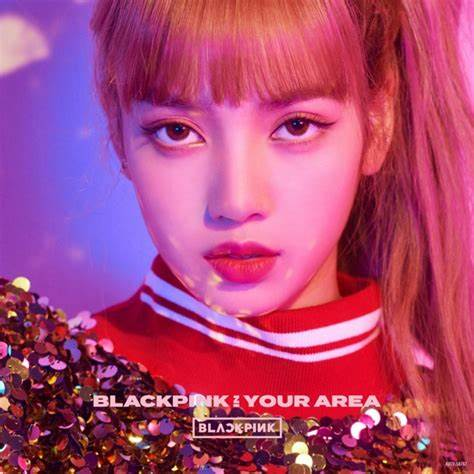
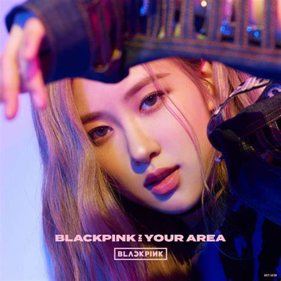
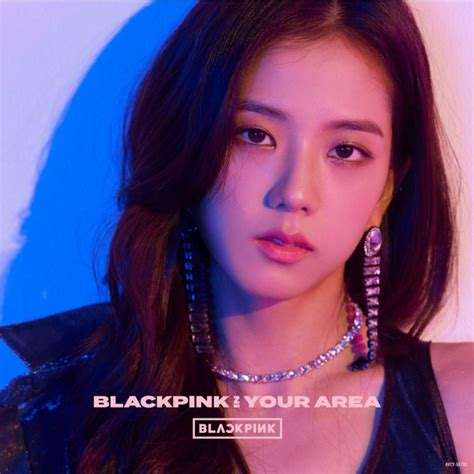
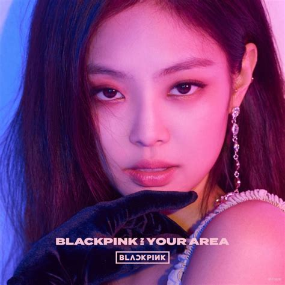

Welcome to the official BlackPink store, where you can indulge in your love for all things BlackPink! Immerse yourself in the music with our carefully selected selection of albums, CDs, and vinyl records, featuring BlackPink's chart-topping hits and mesmerizing performances. Complete your collection with our limited-edition photo books, posters, and official concert merchandise, allowing you to relive the magic of BlackPink's unforgettable live shows. Whether you're a dedicated Blink or a newcomer to the BlackPink phenomenon, our store is your gateway to an enchanting world of Korean pop culture. Celebrate the charisma and talent of Jennie, Lisa, Jisoo, and Rosé by exploring our BlackPink store today. Get ready to shine bright like a BlackPink diamond!
Blackpink is a Southern Korean girl group formed by YG entertainment. The group debuted in 2016 and consists of four members: Jisoo, Jennie, Lisa, and Rose.Blackpink's music has been characterized as primarily EDM and pop with elements of hip hop and trap, although they have incorporated a variety of other genres in their discography, such as R&B, Arabic music,and rock. They are the first Korean girl group who perform at Coachella in 2019.
BlackPink's popularity extends beyond music. They have a strong presence on social media and are know for their fashion sense, and endorsement deals with various brands, such as YSL, and Channel etc. They have a amassed a large and dedicated fan base, known as "Blinks" who support them.
The group’s name was conceived to contrast with the perception of femininity commonly associated with the color pink. When Blackpink debuted, their label YG Entertainment said the name intends to convey that the group embodies more than beauty. “I may look sweet, but I don’t act like it,” Jennie sings in the opening lines of “Ddu-Du Ddu-Du,” echoing this message.
Here are some significant awards for BlackPink.
Click the members' images for more info
   